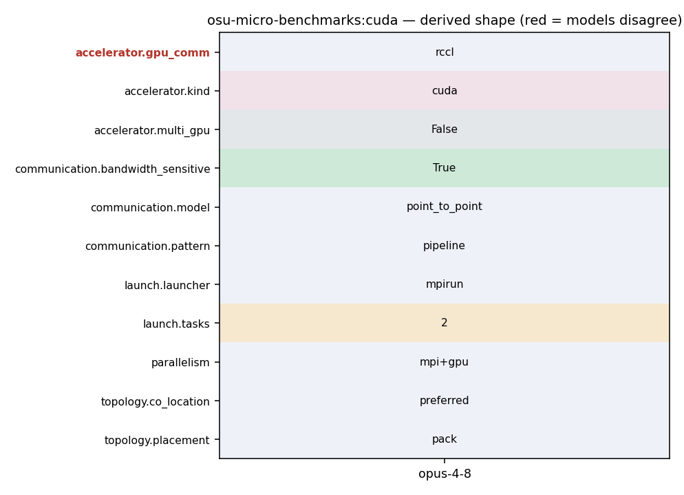

mpirun_rsh -np 2 -hostfile hostfile MV2_USE_CUDA=1 osu_bw D D
1043 In this run, the latency test allocates buffers at both rank 0 and rank 1 on 1044 the GPU devices. 1045 1046 - mpirun_rsh -np 2 -hostfile hostfile MV2_USE_CUDA=1 osu_bw D H 1047 - mpirun_rsh -np 2 -hostfile hostfile MV2_USE_ROCM=1 osu_bw D H 1048 1049 In this run, the bandwidth test allocates buffers at rank 0 on the GPU device
953 ROCm extensions can be enabled by configuring OMB with --enable-rocm 954 option as shown below. Similarly OpenACC extensions can be enabled using 955 --enable-openacc option. The MPI library used should be able to support MPI 956 communication from buffers in GPU Device memory. 957 958 ./configure CC=/path/to/mpicc 959 CXX=/path/to/mpicxx
315 [AC_MSG_ERROR([cannot include hip/hip_runtime_api.h])]) 316 AC_SEARCH_LIBS([hipFree], [amdhip64], [], 317 [AC_MSG_ERROR([cannot link with -lamdhip64])]) 318 AC_DEFINE([_ENABLE_ROCM_], [1], [Enable ROCm]) 319 ]) 320 321 AS_IF([test "x$enable_sycl" = xyes], [
343 [AC_MSG_ERROR([cannot link with -lcudart])]) 344 AC_CHECK_HEADERS([cuda.h], [], 345 [AC_MSG_ERROR([cannot include cuda.h])]) 346 AC_DEFINE([_ENABLE_CUDA_], [1], [Enable CUDA]) 347 ]) 348 349 AS_IF([test "x$build_cuda_kernels" = xyes], [
39 40 ./configure CC=/path/to/mpicc 41 CXX=/path/to/mpicxx 42 --enable-cuda 43 --with-cuda-include=/path/to/cuda/include 44 --with-cuda-libpath=/path/to/cuda/lib 45 make
123 } 124 125 #ifdef _ENABLE_CUDA_KERNEL_ 126 if (options.src == 'M' || options.dst == 'M') { 127 if (options.buf_num == SINGLE) { 128 fprintf(stderr, "Warning: Tests involving managed buffers will use" 129 " multiple buffers by default\n");
1043 In this run, the latency test allocates buffers at both rank 0 and rank 1 on 1044 the GPU devices. 1045 1046 - mpirun_rsh -np 2 -hostfile hostfile MV2_USE_CUDA=1 osu_bw D H 1047 - mpirun_rsh -np 2 -hostfile hostfile MV2_USE_ROCM=1 osu_bw D H 1048 1049 In this run, the bandwidth test allocates buffers at rank 0 on the GPU device
1043 In this run, the latency test allocates buffers at both rank 0 and rank 1 on 1044 the GPU devices. 1045 1046 - mpirun_rsh -np 2 -hostfile hostfile MV2_USE_CUDA=1 osu_bw D H 1047 - mpirun_rsh -np 2 -hostfile hostfile MV2_USE_ROCM=1 osu_bw D H 1048 1049 In this run, the bandwidth test allocates buffers at rank 0 on the GPU device
235 236 for (j = 0; j < window_size; j++) { 237 if (options.buf_num == SINGLE) { 238 MPI_CHECK(MPI_Isend(s_buf[0], num_elements, 239 omb_curr_datatype, 1, 100, 240 omb_comm, request + j)); 241 } else {
233 } 234 #endif /* #ifdef _ENABLE_CUDA_KERNEL_ */ 235 236 for (j = 0; j < window_size; j++) { 237 if (options.buf_num == SINGLE) { 238 MPI_CHECK(MPI_Isend(s_buf[0], num_elements, 239 omb_curr_datatype, 1, 100,
233 } 234 #endif /* #ifdef _ENABLE_CUDA_KERNEL_ */ 235 236 for (j = 0; j < window_size; j++) { 237 if (options.buf_num == SINGLE) { 238 MPI_CHECK(MPI_Isend(s_buf[0], num_elements, 239 omb_curr_datatype, 1, 100,
168 -t 2: // not defined 169 170 osu_bw - Bandwidth Test 171 * The bandwidth tests are carried out by having the sender sending out a 172 * fixed number (equal to the window size) of back-to-back messages to the 173 * receiver and then waiting for a reply from the receiver. The receiver 174 * sends the reply only after receiving all these messages. This process is
1043 In this run, the latency test allocates buffers at both rank 0 and rank 1 on 1044 the GPU devices. 1045 1046 - mpirun_rsh -np 2 -hostfile hostfile MV2_USE_CUDA=1 osu_bw D H 1047 - mpirun_rsh -np 2 -hostfile hostfile MV2_USE_ROCM=1 osu_bw D H 1048 1049 In this run, the bandwidth test allocates buffers at rank 0 on the GPU device
935 * MPI_Finalize. 936 * 937 * Example: 938 * - time mpirun_rsh -np 2 -hostfile hostfile osu_hello 939 940 ROCm, CUDA and OpenACC Extensions to OMB 941 ----------------------------------------
113 break; 114 } 115 116 if (numprocs != 2) { 117 if (myid == 0) { 118 fprintf(stderr, "This test requires exactly two processes\n"); 119 }
1043 In this run, the latency test allocates buffers at both rank 0 and rank 1 on 1044 the GPU devices. 1045 1046 - mpirun_rsh -np 2 -hostfile hostfile MV2_USE_CUDA=1 osu_bw D H 1047 - mpirun_rsh -np 2 -hostfile hostfile MV2_USE_ROCM=1 osu_bw D H 1048 1049 In this run, the bandwidth test allocates buffers at rank 0 on the GPU device
343 [AC_MSG_ERROR([cannot link with -lcudart])]) 344 AC_CHECK_HEADERS([cuda.h], [], 345 [AC_MSG_ERROR([cannot include cuda.h])]) 346 AC_DEFINE([_ENABLE_CUDA_], [1], [Enable CUDA]) 347 ]) 348 349 AS_IF([test "x$build_cuda_kernels" = xyes], [
122 exit(EXIT_FAILURE); 123 } 124 125 #ifdef _ENABLE_CUDA_KERNEL_ 126 if (options.src == 'M' || options.dst == 'M') { 127 if (options.buf_num == SINGLE) { 128 fprintf(stderr, "Warning: Tests involving managed buffers will use"
1043 In this run, the latency test allocates buffers at both rank 0 and rank 1 on 1044 the GPU devices. 1045 1046 - mpirun_rsh -np 2 -hostfile hostfile MV2_USE_CUDA=1 osu_bw D H 1047 - mpirun_rsh -np 2 -hostfile hostfile MV2_USE_ROCM=1 osu_bw D H 1048 1049 In this run, the bandwidth test allocates buffers at rank 0 on the GPU device
1043 In this run, the latency test allocates buffers at both rank 0 and rank 1 on 1044 the GPU devices. 1045 1046 - mpirun_rsh -np 2 -hostfile hostfile MV2_USE_CUDA=1 osu_bw D H 1047 - mpirun_rsh -np 2 -hostfile hostfile MV2_USE_ROCM=1 osu_bw D H 1048 1049 In this run, the bandwidth test allocates buffers at rank 0 on the GPU device
1043 In this run, the latency test allocates buffers at both rank 0 and rank 1 on 1044 the GPU devices. 1045 1046 - mpirun_rsh -np 2 -hostfile hostfile MV2_USE_CUDA=1 osu_bw D H 1047 - mpirun_rsh -np 2 -hostfile hostfile MV2_USE_ROCM=1 osu_bw D H 1048 1049 In this run, the bandwidth test allocates buffers at rank 0 on the GPU device
953 ROCm extensions can be enabled by configuring OMB with --enable-rocm 954 option as shown below. Similarly OpenACC extensions can be enabled using 955 --enable-openacc option. The MPI library used should be able to support MPI 956 communication from buffers in GPU Device memory. 957 958 ./configure CC=/path/to/mpicc 959 CXX=/path/to/mpicxx